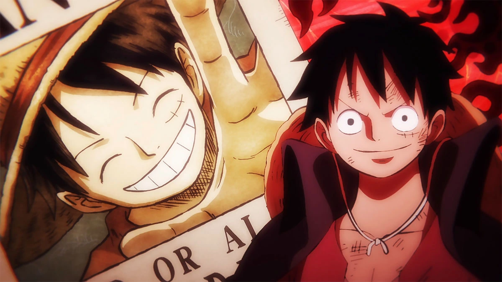
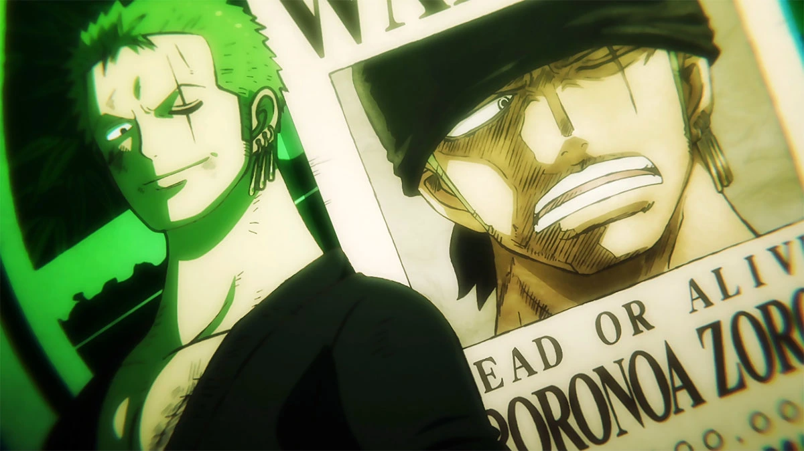
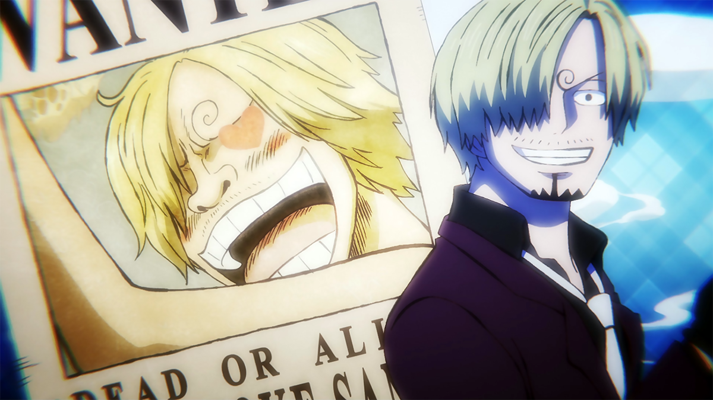
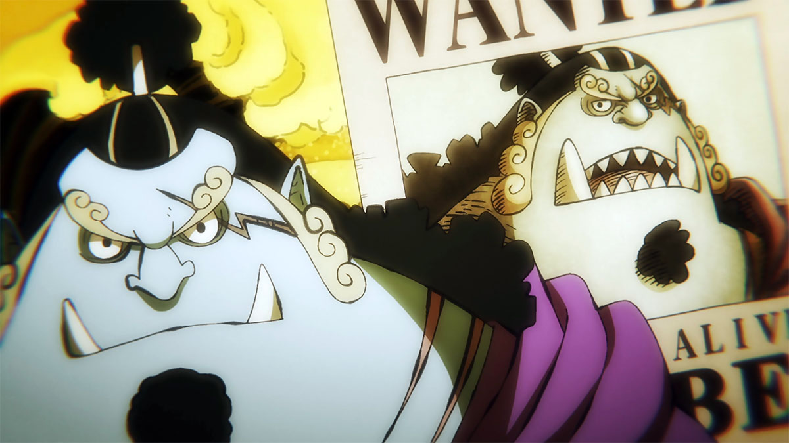
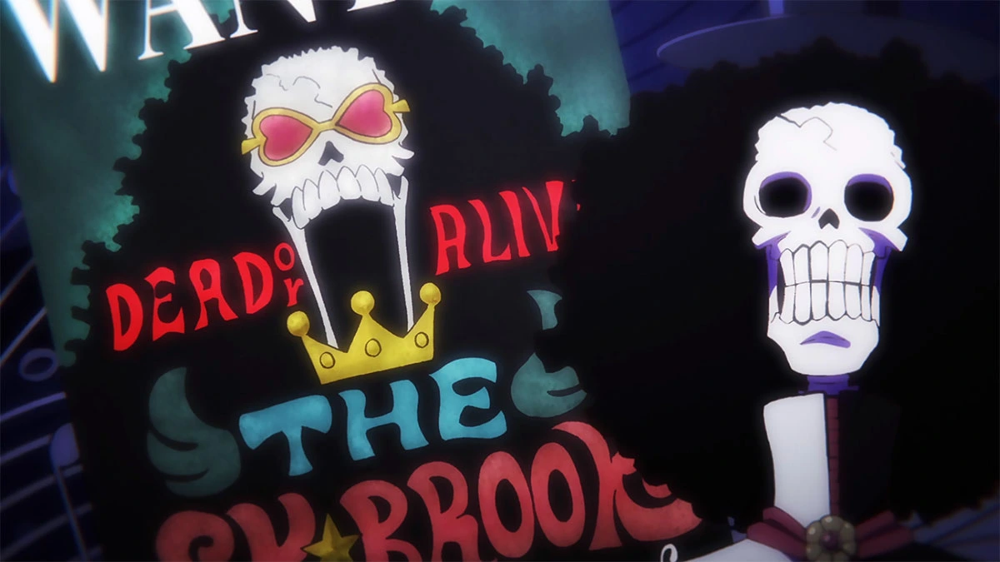
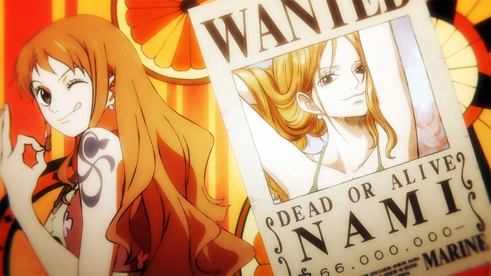
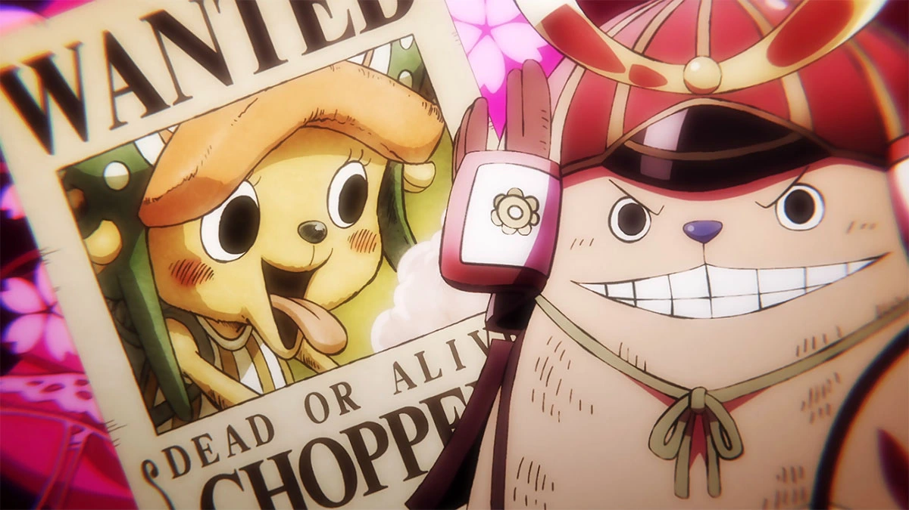
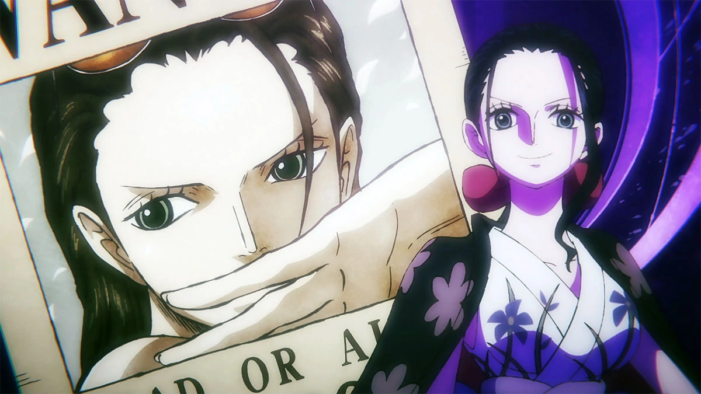
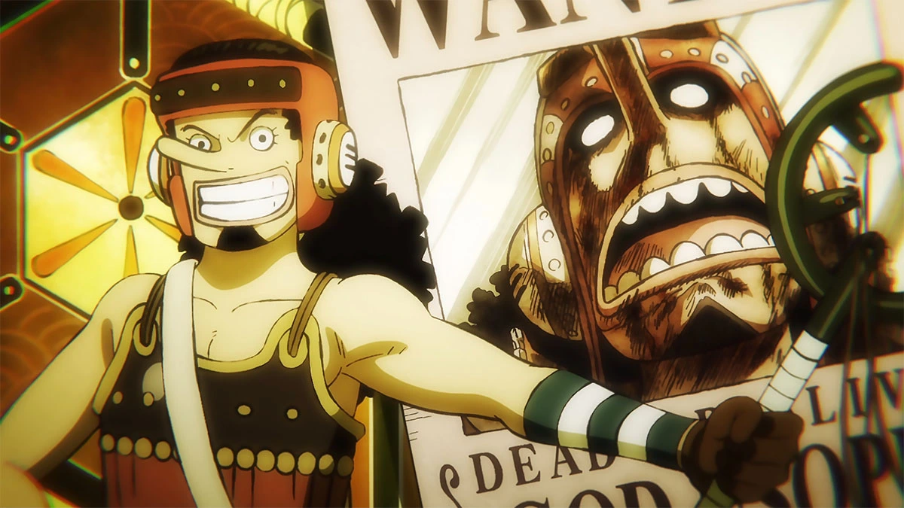
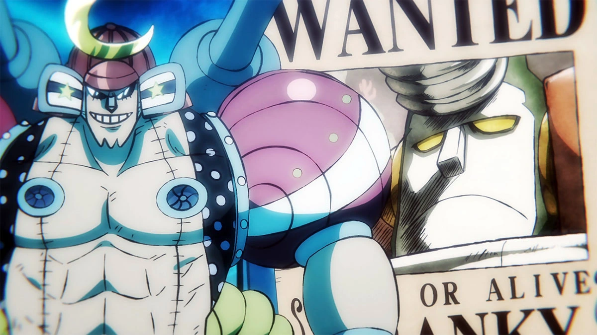

Monkey D. Luffy - Yonkou
Luffy é o capitão do bando dos chapéus de palha, quando era criança comeu um fruto proibido chamado de Gomu Gomu no Mi que lhe deu poderes de se esticar como se fosse um homem-borracha, Ele tem o sonho de um dia se tornar o rei dos piratas tem como inspiração o pirata que foi por todos considerado o rei, Gol D. Roger, ele conquistou fama, poder, riquezas e liberdade e para superá-lo Luffy terá que encontrar o One Piece, o tesouro lendário que está localizado na última ilha da Grand Line, para que possa encontrar o tesouro deixado por Roger, Luffy montou sua tripulação e juntos estão enfrentando os obstáculos do caminho para enfim encontrar o One Piece.Bounty: 3,000,000,000 berries
Gomu Gomu no Mi

Roronoa Zoro - Rei do Inferno
No início da história Zoro era um famoso caçador de piratas que havia sido capturado pela marinha. Ele foi o primeiro membro do bando dos chapéus de palha, tem o sonho de se tornar o maior espadachim do mundo e para que isso aconteça ele terá que derrotar Dracule Mihawk que por sua vez ja o derrotou uma vez, esta derrota fez Zoro jurar para Luffy que ficaria mais forte e que nunca mais seria derrotado, desde então ele vem treinando e se fortalencedo cada vez mais para derrotar seu maior rival, pois esta foi a promessa feita quando criança com sua melhor amiga.Bounty: 1,111,000,000 berries
Santoryu - Estilo três espadas

Vinsmoke Sanji - Perna Preta
Em primeiro momento sanji aparece no anime como um cozinheiro no barco restaurante Baratie, depois descobrimos a triste história de seu naufrágio quando criança, sendo resgatado por Zeff o dono do restaurante que o ensinou a valorizar o alimento, pois quando naufragram ficaram presos em uma ilha por muitos dias sem alimentos, Sanji foi o quarto membro da tripulação, ele esta sempre rivalizando com Zoro e a força de ambos é bem semelhante, após o Luffy os dois são os mais poderosos da tripulação.Bounty: 1,032,000,000 berries
Diable Jambe - Chute de Fogo

Jimbei - Cavaleiro do Mar
Ele era um membro dos Piratas do Sol, eventualmente se tornou capitão logo após a morte de seu capitão original, Tiger. Eventualmente se tornou um dos Shichibukai, contudo renunciou do posto durante a Batalha de Marineford. Um pouco antes e durante a guerra, Jimbei fez amizade com Luffy o salvando da morte, durante o arco 'ilha dos homens-peixe', Salvou novamente a vida de Monkey D. Luffy fazendo uma transfusão de sangue, logo após foi convidado a se juntar ao bando, ingresão que só aconteceu realmente durante o arco de 'Whole Cake'.Bounty: 1,100,000,000 berries
Karatê Homem-Peixe

Brook - Soul King
Brook era um músico famoso e líder da Banda do Rumbar. Durante uma viagem para o Novo Mundo, a tripulção encontrou um navio fantasma infestado de zumbis que infectaram toda a tripulação, o que acabou matando todos, inclusive Brook, contudo ele havia comido a Yomi Yomi no mi "fruta da ressureição", o que fez Brook voltar a vida porem ja como um esqueleto. Depois de passar 50 anos sozinho dentro do navio fantasma ele se juntouy aos piratas do chapéu de palha durante o arco de "Thriller Bark" e ajudou a derrotar o governante da ilha, o Shichibukai Gekko Moriah, que havia roubado a alma de brook, desde então ele acompanha Luffy em sua jornada parase tornar o rei dos piratas.Bounty: 383,000,000 berries
Yomi Yomi no mi

Nami - Gatuna
Nami é uma ladra habilidosa que foi criada por Bellemere, uma marinheira que a salvou quando ela era uma criança. No entanto, Bellemere foi morta por piratas quando Nami ainda era jovem, o que deixou uma marca profunda nela. Nami se tornou uma ladra para juntar dinheiro e comprar sua aldeia natal de volta de um poderoso pirata, chamado Arlong, que a tinha dominado. Ela inicialmente usa os Chapéus de Palha para alcançar seus objetivos pessoais, mas eventualmente se torna leal a eles e ajuda a tripulação em suas aventuras. Ela é conhecida por sua habilidade em navegação e seu talento em desenhar mapas precisos. Ela desenvolve um relacionamento próximo com sua tripulação e eventualmente se torna a navegadora oficial dos Piratas do Chapéu de Palha.Bounty: 366,000,000 berries
Clima-Tact

Tony Tony Chopper - Pet
Ele é uma rena que comeu a fruta Hito Hito no Mi, o que lhe permitiu ter a habilidade de se transformar em uma forma híbrida de rena e humana. Chopper foi inicialmente encontrado por Monkey D. Luffy e sua tripulação enquanto eles navegavam pela ilha de Drum. Chopper era um médico jovem e talentoso, mas foi rejeitado pela sua própria espécie, que o considerava uma aberração por causa de sua aparência incomum. Depois que a tripulação ajudou a ilha de Drum a se libertar do governo corrupto de Wapool, Chopper decidiu se juntar à tripulação de Luffy como médico oficial. Ele também se tornou um bom amigo dos outros membros da tripulação e ajudou-os em suas aventuras.Bounty: 1,000 berries
Hito Hito no mi

Nico Robin - Filha do Demônio
Ela é uma arqueóloga e se junta à tripulação depois de se infiltrar na organização Baroque Works em busca do Pluton, um antigo navio de guerra lendário. Robin foi caçada por muito tempo devido à sua habilidade em ler poneglyphs, artefatos antigos que contêm informações valiosas sobre a história do mundo. Ela é a única sobrevivente da Ilha Ohara, que foi completamente destruída pelo governo mundial por causa de sua pesquisa sobre os poneglyphs. Depois de se juntar aos Chapéus de Palha, Ao longo da série, Robin é confrontada com inimigos poderosos que querem capturá-la e usá-la para seus próprios fins.Bounty: 930,000,000 berries
Hana Hana no mi

Usopp - God Usopp
Ele é um franco-atirador e inventor habilidoso que se junta à tripulação durante a saga da Vila Syrup. Usopp é um mentiroso compulsivo que muitas vezes usa histórias inventadas para se proteger e impressionar os outros. No entanto, ele também é um personagem corajoso que luta ao lado de seus amigos e protege aqueles que ama. Ao longo da série, Usopp enfrenta muitos inimigos poderosos e desenvolve novas habilidades de luta e invenções. Ele também luta contra sua própria insegurança e medo de se machucar ou falhar. Em uma batalha importante contra o vilão Donquixote Doflamingo, Usopp prova sua coragem e habilidade ao criar uma nova arma e liderar seus companheiros de tripulação em uma batalha épica.Bounty: 500,000,000 berries
Estilingue

Franky - Ciborgue
Ele é um carpinteiro e inventor habilidoso que se junta à tripulação durante a saga da Ilha Water 7. Franky é um personagem com um passado misterioso, tendo sido um membro do sindicato da Galley-La Company e também o líder da gangue Franky Family. Ele possui um corpo cibernético e é capaz de disparar mísseis e lasers de seus braços. No decorrer do anime Franky ajuda a tripulação em suas aventuras, fornecendo-lhes informações e construindo novas armas e navios. Foi ele quem construiu o navio que é utilizado atualmente pelos mugiwaras, o Sunny, navio este que também é uma arma muito poderosa. Dentre suas muitas invesões ele também construiu um grande robô o qual ele utiliza em batalhas.Bounty: 394,000,000 berries
Cibernetificação
